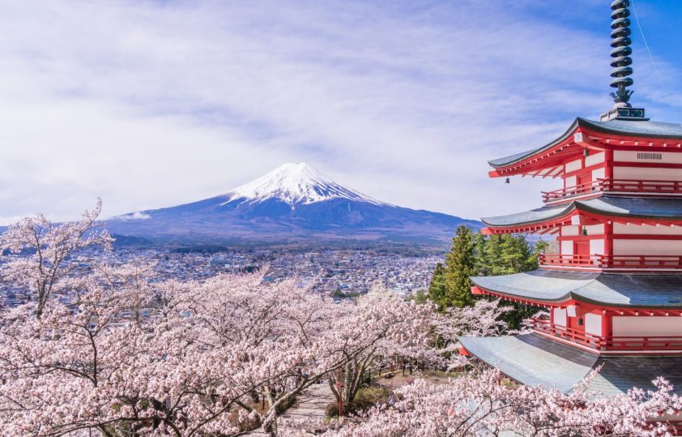

Standing 3,776.24 metres tall, Mount Fuji is Japan’s highest mountain, and its active volcano is one of the country’s most recognisable icons. The mountain is a UNESCO-recognised cultural site to which pilgrims of all sorts have streamed for millennia, and you should join them! Some people visit Mount Fuji for religious reasons, while others go for artistic reasons. There also are visitors whose aim is to summit the mountain, which is the seventh highest mountain on an island. If you hope to hike its slopes, you will need to visit between mid-July and the end of August. For the rest of the year, its summit is blanketed with snow. The most enchanting time to visit is during the few weeks of spring when the cherry trees blossom. If you view the mountain from Lake Kawaguchiko at that time of year, you will see it framed by the delicate pink flowers. Mount Fuji is undoubtedly one of the 10 most beautiful places in the world no matter what the weather.
Facts about Mount Fuji is that Mt Fuji is on an active triple junction of tectonic activity. It has been active for over 1,000 years, but the last eruption was recorded on December 16, 1707, which lasted until January 1, 1708.